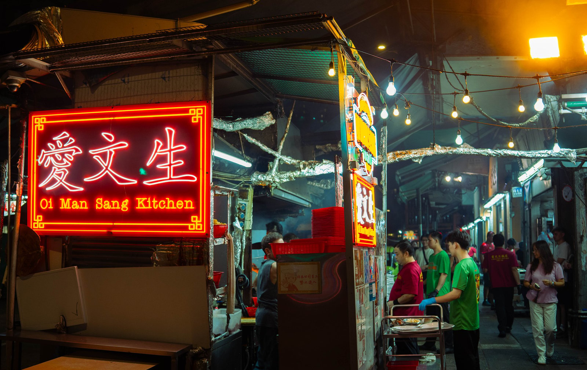
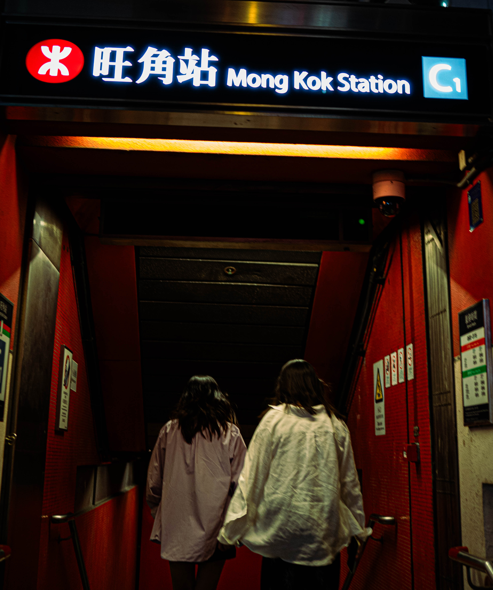
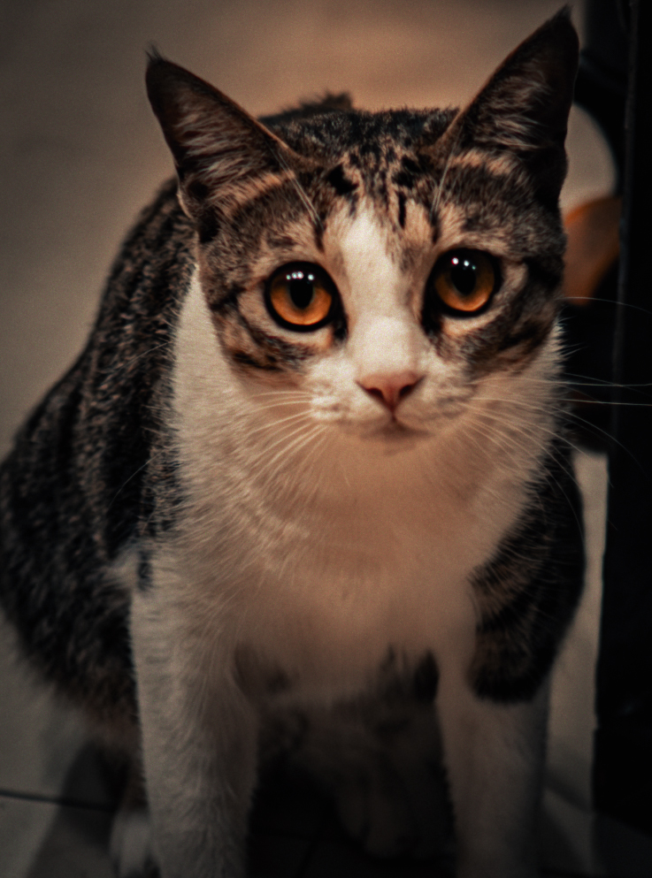
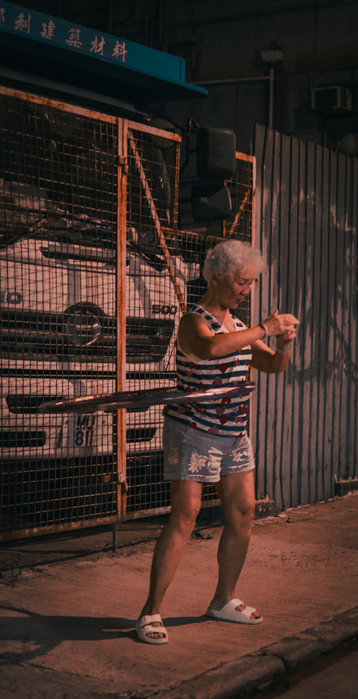
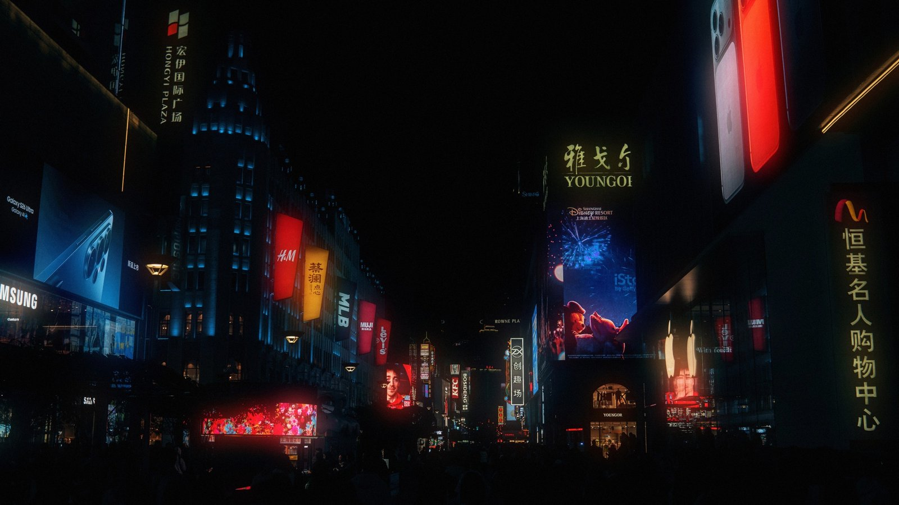

Aikagra
एकाग्र Hong Kong
The person behind the work
A builder’s mind.A filmmaker’s eye.
I’m Aikagra. Most people call me Kai.
I study Computer Science at the University of Hong Kong, with a minor in Finance. I’m interested in what technology can do for people — and what a camera can make us notice.
Herald starts with a question about workplace safety. HeyNovo makes a complex product easier to understand. My films and photographs start with people, light, and a moment worth keeping.
Different mediums.
WHO AM I? मैं कौन हूँ? Experience
Jun 2026 — present
Novo AI Growth & Automations Intern
Production website, product demos, GTM agents, and RevOps workflows.
2026 — present
The University of Hong Kong Teaching Assistant & School Peer Adviser
First-year programming tutorials and student advising.
Dec 2025 — Jan 2026
Free Malaysia Today Editorial & Digital Intern
Publishing, SEO, newsroom IT, and three video stories with 100,000+ total views.
Products, websites & experiments
Selected work. Built from the first idea
heynovo.ai ↗
Novo AI Website · Product · Growth A production website for a health insurance intelligence platform, alongside product demos and growth automation.
Visit heynovo.ai ↗ My contribution I built: the marketing website, product demo system, GTM agents, RevOps dashboard, and technical SEO.
Tools: Next.js, TypeScript, Tailwind CSS, Framer Motion.
Context: Growth and Automations Intern, June 2026 to present.
▶ Watch the demo · 0:22
Herald AI · Safety Safety and compliance guidance for physical workers. Built around Hong Kong regulations and quick, direct answers.
Watch demo ↗ My contribution I built: the live prototype and regulatory information architecture, with work across product strategy, AI safety, market research, and GTM.
Recognition: HK$100,000 HKU Dean’s Innovation and Entrepreneurship Fund; the only Year 1 team selected.
Progress: three confirmed pilots.
View repository
Try the live product ↗
HK House Tracker Web · Data A Hong Kong Island rental finder that makes it easier to compare listings, budgets, and trade-offs.
Try it live ↗ My contribution Features: search, budget and size filters, saved listings, comparison, and source coverage.
Data: automated 28HSE snapshot refreshes every three hours.
Tools: Next.js, TypeScript, GitHub Actions, Vercel.
View repository
Document provenance Breadcrumb Original → Issued copies → Evidence
Explore the project ↗
Breadcrumb AI · Security A document provenance system that fingerprints recipient copies and compares leaked screenshots or PDFs against the evidence.
View repository ↗ My contribution I built: linguistic codewords, tracked links, extraction, deterministic scoring, and evidence reports with semantic review.
Tools: Python, Streamlit, SQLite, Gemma/Ollama, OCR.
Context: a hackathon project exploring document provenance and local AI.
Aikagra Studio ↗
Aikagra Studio Website · Photography A home for my photography and video work, with a 3D opening scene and a live Flickr archive.
Visit the studio ↗ My contribution I built: the Next.js portfolio, live Flickr integration, image optimization, and motion.
Photography, filmmaking, and the website live in the same project.
View repository
Hardware research Upright. Small wearable.
47g prototype208 survey participants3 iterations
Upright Hardware · Research An Arduino and Bluetooth posture wearable with a companion app, shaped by user research and three prototypes.
Project details My role: independent researcher and product builder.
Tools: Arduino, Bluetooth, Flutter, calibration, and haptic feedback.
Research: 208 participants; 76% reported poor posture and more than 90% recurring back pain.
Result: qualified for a Regeneron ISEF qualifier.
More things I’ve built
The stories I make
Stories in motion. Films, product demos,
▶ Dreamcatcher Film · 1:11 ▶ Herald Product demo · 0:22 ▶
Digex 2024 Trailer · 0:45
Explore more films & videos 7 videos Loading the video archive…
Watch the complete video archive on Google Drive
Photography
A little closer. People, places, and moments





See more photographs Selected from my VSCO. View the full gallery ↗
A few milestones
HK$100,000 HKU Dean’s Innovation &
Learning by doing Hackathons, prototypes &
SEA Hack Winner, Votee.ai &

 heynovo.ai
heynovo.ai